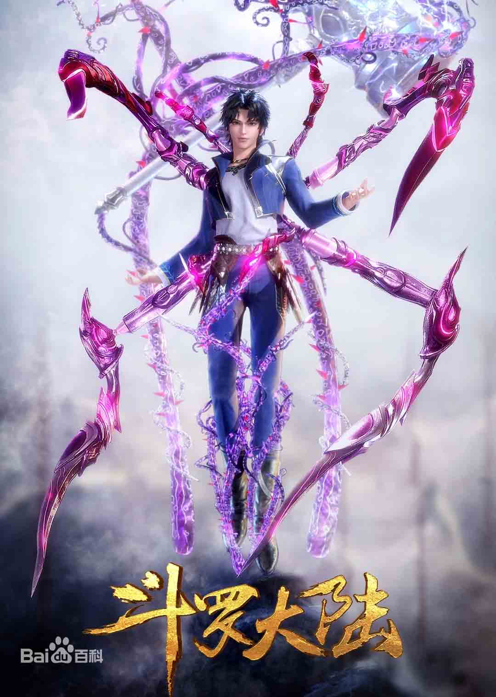

斗罗大陆
作 者 : 唐家三少
类 别 : 玄幻
唐门外门弟子唐三，因偷学内门绝学为唐门所不容，跳崖明志却未死，反而以另外一个身份来到了另一个世界，一个属于武魂的世界，名叫斗罗大陆。 这里没有魔法，没有斗气，没有武术，却有神奇的武魂。这里的每个人，在自己六岁的时候，都会在武魂殿中令武魂觉醒。 武魂有动物，有植物，有器物，武魂可以辅助人们的日常生活。而其中一些特别出色的武魂却可以用来修炼并进行战斗，这个职业，是斗罗大陆上最为强大也是最荣耀的职业——魂师! 当唐门暗器来到斗罗大陆，当唐三武魂觉醒，他能否在这片武魂的世界再铸唐门的辉煌？ 他能否成为这个世界的主宰：神?
| 评价 | 斗罗大陆是我第一次看到把网络游戏（等级）和金庸武侠（爱恨情仇）结合在一起的小说。金庸是经典没错，但是对于我来说，在这个游戏，手机横行的年代，时代变了，金庸那种父辈类型的小说并不能吸引我，代入感不强，语言也不是大白话文，看起来略微费劲。虽然就如今的眼光看没有以前的味道了，但作为入坑的第一部小说还是值得推荐的。 |